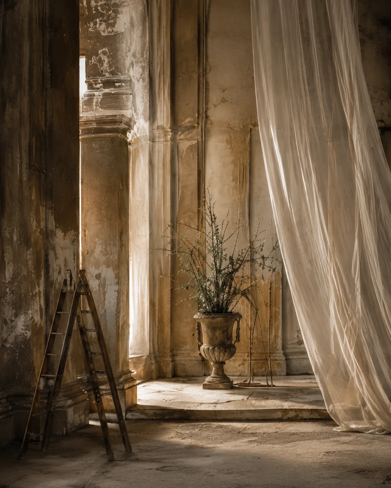

ESTUDIO ESPACIAL — INTERIOR
Atmósfera Interior
Lino, superficies envejecidas y elementos orgánicos para construir una tensión sutil en el espacio.

ESTUDIO ESPACIAL — INTERIOR
Lino, superficies envejecidas y elementos orgánicos para construir una tensión sutil en el espacio.
